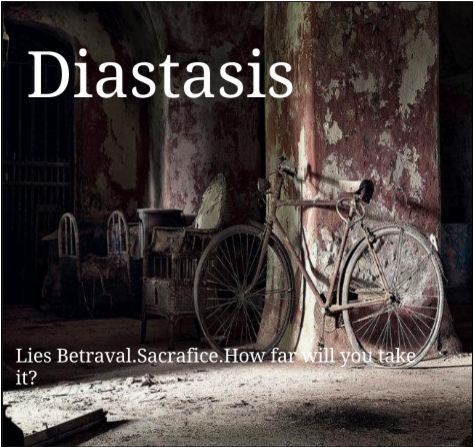

Challenge: Design a Band
Challenge Information
Design thinking helps discover unmet needs, anticipates and matches people's needs with what is and what could be technologically feasible and what a viable business strategy can convert into customer value, market opportunity and social good.
We are studying this to have a better understanding in computer coding and connections to the real world.This creation of this ablum of pure Randomness is giving us skills to have the capcity to make quick decisons and brainstorm based on data and information from public.
In order to create this ablum we needed to gather information and data.This data came from behalf of my peers.I surveyed my peers in their interest in fonts, colors, and wheter realistic or abstract art. The data gave me in return that serif font,netural & cool colors,and realistic art.This produce as the album you seen under "Diastasis".
Album Cover
Band Biography
A place of needed rescources In "Why Arizona".A small city off freeway 85.A street that is lonely that give the shivers down our backs looking at tumbleweeds pass by.In this small city lived Ash, Hunter,todd,and Chip.These guys lived down the same street that was part of freeway 85.In "why, Arizona there was not a lot of chaos and noise.The only sounds were the tumbleweeds,horse shoes hitting the floor,cold glass bottles taken out of the stores coolers, and the cars zooming through the freeway. They wondered why was this "Why,Arizona?" is there just a freeway and a row of houses and a liquor store just in the middle of no where with a big cliff behind them?What was the opening of the cave lead to?
Ash,Hunter,hunter and todd all boy band of similar ages decided to make some music for this place of "Why Arizona" with no exciment to understand what the notes it takes to make sounds in the air.